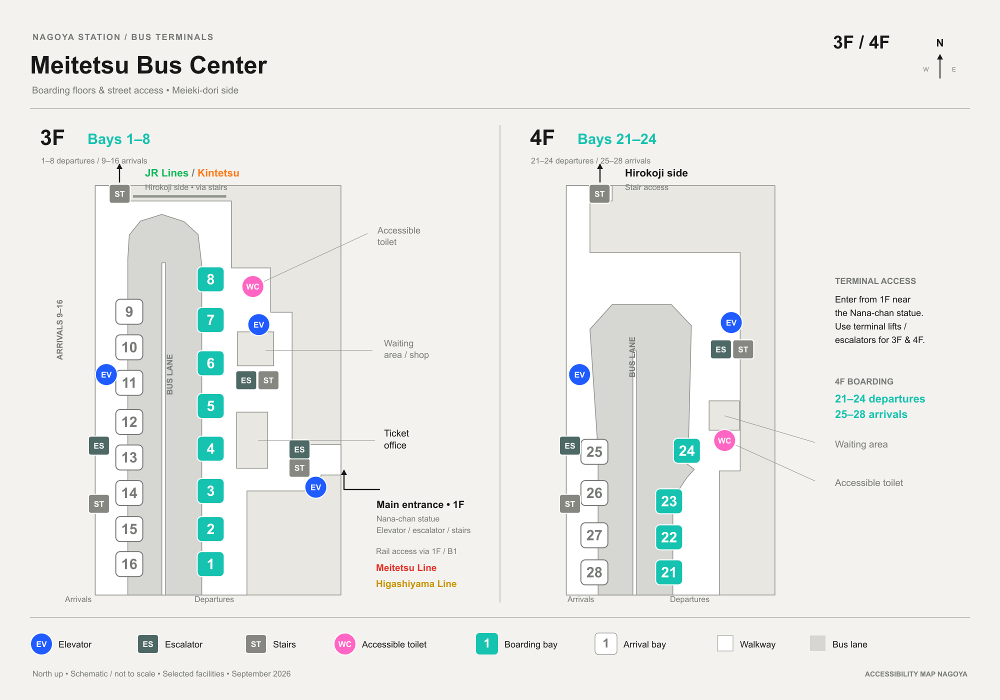

NagoyaStationMeitetsu Bus
Two boarding floors, each with its own lifts, escalators and one accessible toilet.
Where the letters are
AI-drawn from the sources cited below, checked against them · badge letters match the categories below

Redrawn from Meitetsu Bus’s own current official floor and access diagrams, viewed directly (kotsu… the terminal’s own “のりば案内図” platform guide). Closed department-store links and counters are omitted; not every elevator serves every floor.
Step-free guide
ElevatorエレベーターFive lifts
The current official floor and access diagram shows five lifts across the two boarding floors — not one lift for the whole terminal.
- A3F, west side
- Near arrival bays 9–16.
- B3F, east side
- Near departure bays 5–8, close to the accessible toilet.
- C3F, main entrance
- At the Nana-chan statue entrance on 1F — elevator, escalator and stairs together.
- D4F, west side
- Near arrival bays 25–28.
- E4F, east side
- Near departure bay 24, close to the accessible toilet.
Accessible toilet車椅子トイレOne per floor
One accessible toilet on 3F and one on 4F.
- A3F
- East side, near departure bays 5–8.
- B4F
- East side, near departure bay 24.
Entrances & exits出入口1F, Nana-chan side
The main entrance is on 1F, at the Nana-chan statue, with an elevator, escalator and stairs together. A separate stair-only entrance serves each floor from the Hirokoji side.
- Main entrance
- Nana-chan statue, 1F — lift, escalator and stairs.
- Hirokoji side, 3F
- Stair access only.
- Hirokoji side, 4F
- Stair access only.
- Rail connections
- Meitetsu Line and Higashiyama Line, via 1F / B1.
- Also nearby
- JR Lines and Kintetsu, via the 3F Hirokoji-side stairs.
- Note
- Closed department-store links, counters and the former department-store elevator are no longer in use and are not shown.
- Coin lockers
- 3F, near the restrooms.
Boardingのりば3F 1–16 · 4F 21–28
3F carries departures 1–8 and arrivals 9–16. 4F carries departures 21–24 and arrivals 25–28.
- 3F
- Departures 1–8, arrivals 9–16.
- 4F
- Departures 21–24, arrivals 25–28.
- Before you board
- Check the departure screens — the terminal continues to operate after the department-store closure, and some older signage no longer applies.
Source · Meitetsu Bus, current official floor and access diagrams (meitetsu-bus.co.jp/rosen/meibc); Meieki floor guide (meieki.com/meitetsu_buscenter.php); J-Bus terminal guide (secure.j-bus.co.jp/busrepo/2023/04/05/post-15986/); Meieki.site access guide (meieki.site/transportation/bus/meitetsu-bus-center/). Checked September 2026.
On the map
Google Map — loads on the live site